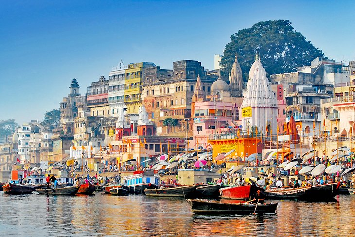
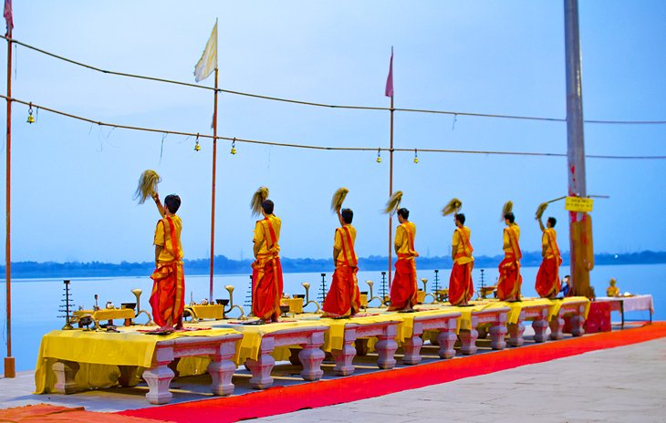
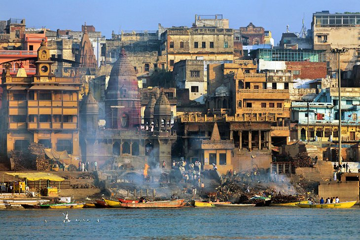
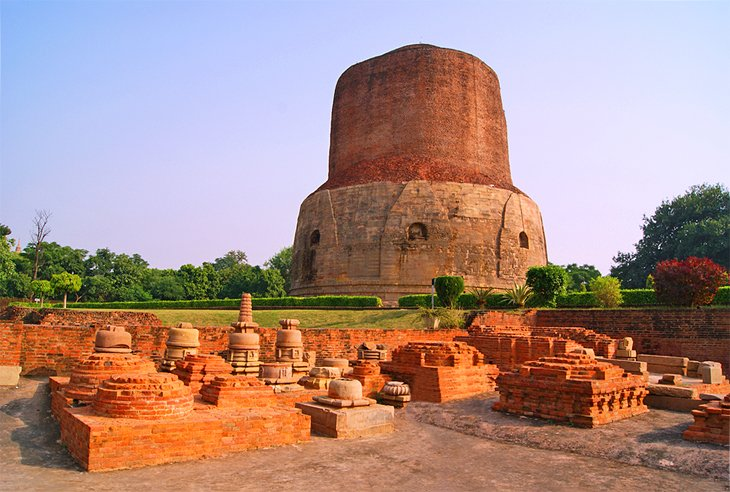
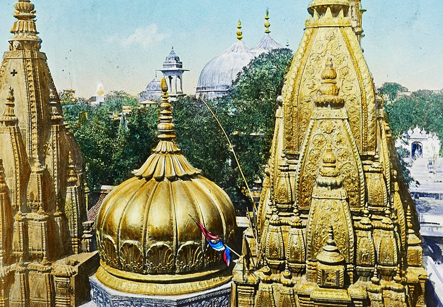
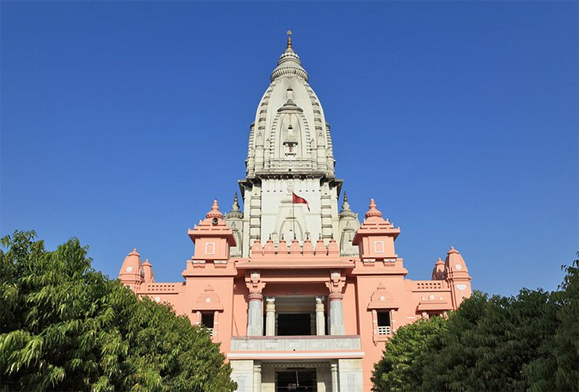
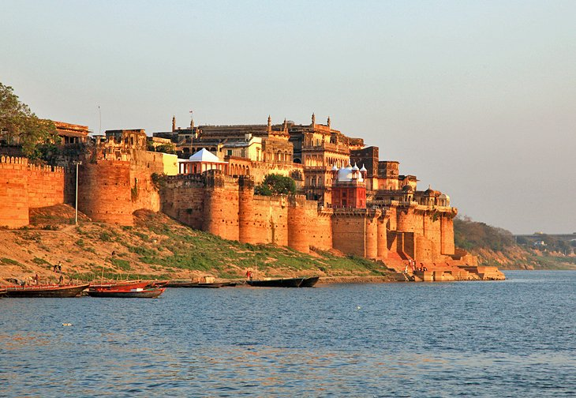
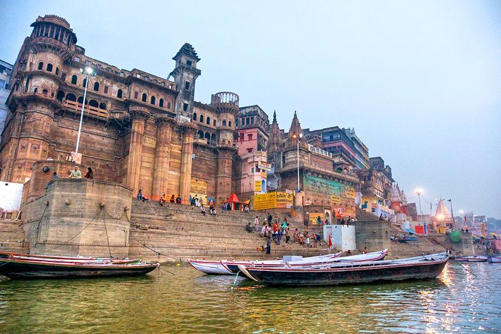

Ganges River

Named after the Hindu goddess Ganga, the Ganges River is one of the most revered natural sites in India. The river extends southeast from the Himalayas in the north to the Bay of Bengal. Between 400 million and 600 million people rely
on the Ganges River to provide water for daily bathing and drinking.
Hindus come to Varanasi from all around the world to purify themselves in the holy Ganges water and perform rituals along the dozens of ghats along the river. For tourists, the river helps provide a fixed point of orientation for navigating
around the city, and you'll no doubt spend lots of time sightseeing and watching life happen around the Ganges.
Consider waking up early and taking a sunrise cruise along the river — negotiate with one of the countless boatman hanging out along the ghats.
In the afternoon or early evening, one of the top things to do in Varanasi is purchase a small floating offering filled with fresh flowers and a candle, and release it onto the Ganges River. The blissful experience will connect you more
deeply with Hindu culture and stay in your mind for years to come.
Dasaswamedh ghat

The lively atmosphere of the Dasaswamedh Ghat makes it one of the best places to visit in Varanasi. This tourist attraction is a swirling hodgepodge of flower sellers touting bright blossoms, boat operators hawking rides along the Ganges
River, and sadhus (holy men) with face paint. You can spend hours people watching in this area during the day.
Hindu priests put on the Ganga Aarti every night at the Dasaswamedh Ghat, starting at around 7pm. Donning saffron-hued robes, the priests spread out plates of flower petals and other offerings and blow a conch shell to signal the start
of the spiritual ceremony. Thousands of tourists gather to watch the priests chant and wave tiered plates of sandalwood-scented incense in intricate patterns for about 45 minutes. It's an extravagant sight that you won't want to miss.
Hot tip: Get to the ghat at least a couple of hours early if you want to beat the crowds and score a great spot for the show. You can also get incredible views from boats along the river or in shop balconies above the ghat.
Assi Ghat

When it comes to famous places in Varanasi, the city's southernmost main ghat regularly tops the list. Assi Ghat's star attraction is a Shiva lingam (phallic representation of the Hindu deity) beneath a sacred fig tree. It draws hundreds
of pilgrims every day, who come to worship Lord Shiva after rinsing in the Ganges River.
Feeling a little stiff from traveling? Swing by Assi Ghat at sunrise, when you can get your downward-facing dog on with dozens of others during morning yoga accompanied by live music every day. Tourists can also see another Ganga Aarti
performance here in the evening, which is slightly smaller and more intimate than the one at Dasaswamedh Ghat.
Manikarnika Ghat

Plumes of smoke swirl toward the sky at Manikarnika Ghat. No, it's not from a factory — it's from the perpetual cremations that happen on this ghat. Hindus believe that Manikarnika Ghat is one of the most auspicious places for the departed
to reach moksha (emancipation from the cycle of spiritual rebirth). The funeral pyre at this ghat burns 24/7, and around 100 cremations take place every day.
Priests or guides frequently offer to lead tourists through the fascinating ghat, however some can be aggressive in their demands for money. You may see doms (members of an untouchable caste) carrying cloth-wrapped bodies on makeshift
stretchers, along with piles of firewood stacked up, ready to feed the pyre.
You may also be offered the chance to see a cremation up close — for a fee, of course. While profound, the experience is not for the faint of heart, nor is it a tourist attraction in the traditional sense. Know your limits, be respectful,
and avoid taking photos of the funerals, mourners, and the departed.
Hot tip: If you're interested in the ritualistic cremations, but can't stomach the idea of seeing them up close, consider passing by Manikarnika Ghat on a boat tour along the Ganges River. The distance dampens the effect while still giving
tourists a sense of what's happening in this important place.
Dhamek Stupa

Hinduism certainly has a stronghold on Varanasi, but Buddhism has a major presence less than 12 kilometers away in the village of Sarnath. Here, you'll find the Dhamek Stupa, a massive stone and brick structure that's 43.6 meters tall
and 28 meters in diameter. The stupa was built more than 1,500 years ago as a replacement for a structure that dated back to 249 BCE.
The devout believe that the Buddha came to Dhamek Stupa to give his first sermon, which revealed the Eightfold Path, after he achieved enlightenment. Take a look at the elegant carvings of birds, people, and flowers that cover the walls
of the stupa as you wander around the attraction.
Sarnath also has plenty of other tourist places that make it a worthwhile day trip destination from Varanasi. Check out the Chaukhandi Stupa (a Buddhist shrine that dates back to at least the 6th century), then make your way to the Sarnath
Museum to see the Lion Capital of Ashoka, a sculpture that used to sit atop the Ashoka Pillar in 250 BCE and became the official Emblem of India in 1950. Round out the day with sightseeing at the peaceful Tibetan Temple before making
your way back to Varanasi.
Shri Kashi Vishwanath Temple

Hindu pilgrims and tourists alike travel for thousands of miles to reach the Shri Kashi Vishwanath Temple, a sacred attraction around four kilometers from the Varanasi Junction railway station near the Manikarnika Ghat. The impressive
structure, dedicated to the Hindu deity Shiva, has earned the nickname "The Golden Temple" for its striking spire — plated in some 800 kilograms of pure gold. The distinctive design of this temple has gone on to inspire the architecture
of hundreds of other temples across India.
Strict security measures around the complex require that tourists stash their cameras, phones, bags, and other belongings in a rentable locker nearby. Expect to ditch your shoes and wait in line with hundreds of other visitors, all eager
to touch the 60-centimeter-tall, sin-absolving Shiva lingam in a silver alter. It's an intense, yet rewarding experience
Hot tip: Skip this attraction on Hindu holidays, when devotees wait in line for up to two full days to enter the temple.
Banaras Hindu University

Banaras Hindu University has been a central part of Varanasi's identity since its inception in 1916. The well-respected public university is home to more than 25,000 students, making it one of Asia's largest residential universities.
There are no hill stations near Varanasi, so if you're looking for an escape from the crowds and busy city, come to this lush 1,300-acre campus. The serene area is shaded by hundreds of tall trees and offers a breath of fresh air from
the hectic atmosphere at the Banaras Ghats.
While on campus, swing by the New Vishwanath Temple, a famous temple that finally finished its decades-long construction in 1966. Standing 77 meters high, the temple is one of the tallest in India and draws architectural inspiration from
the nearby Shri Kashi Vishwanath Temple.
Visitors to the university should also make a point to explore the on-campus museum, Bharat Kala Bhavan. The cultural institution features a spectacular collection of miniature paintings, along with over 100,000 other artifacts of archeological
and artistic importance.
Ramnagar Fort

There are few destinations in India without a fort, and Varanasi is no exception. About 14 kilometers from the city center, you'll find Ramnagar Fort. The 18th-century sandstone fort and palace is no longer used as a defensive structure,
but instead houses a quirky museum brimming with vintage automobiles, elaborate hookahs, antique weapons, sedan chairs decked out in jewels, and a one-of-a-kind astronomical clock that's more than 150 years old.
After enjoying an archeological treasure hunt at the museum, check out the fort's temples, one of which honors Veda Vyasa, author of the Mahabharata and other important Hindu epics.
Darbhanga Ghat

Photographers, take note: Darbhanga Ghat offers the best opportunity to get amazing shots of Varanasi. The stairs leading down to the riverbank are crowned by the ultra-luxurious BrijRama Palace, an old fort that has since been converted
into a heritage hotel. The property's Greek pillars and rounded balconies give the area (and your photographs) a regal backdrop. Plan to get here around dawn to capture unobstructed views of the incredible sunrise over the horizon
of the Ganges River.